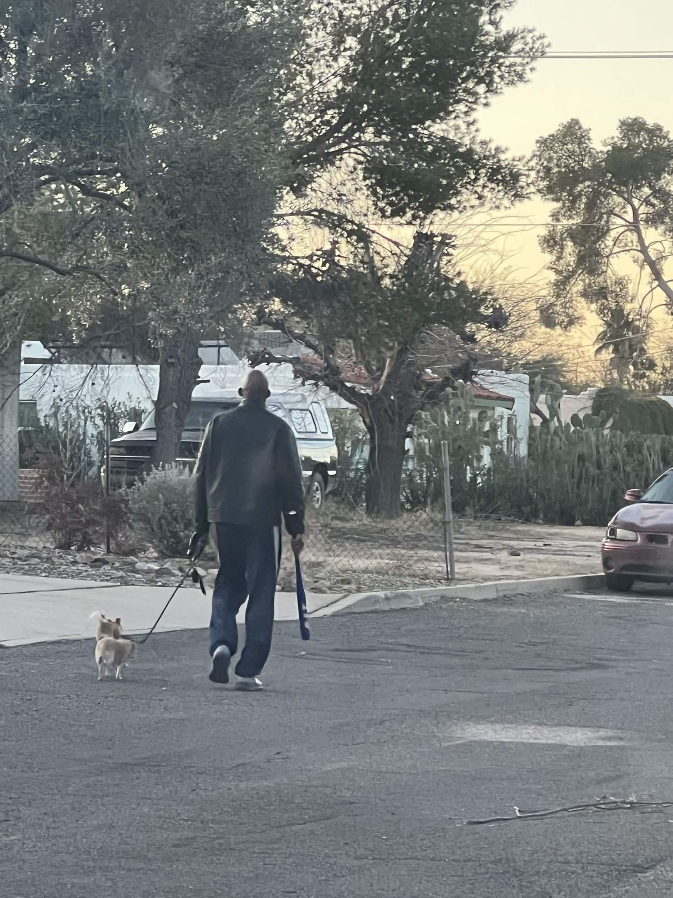

SIGHTING RECORD // 17:42 // 2026-03-17
sighting-0003
I need to be precise about what I mean by same. I do not mean similar. I mean the gait cadence is identical to a measurement I could verify if I had the right software, which I do not, but my eye is telling me what the software would tell me, which is that the step interval is the same, the heel-strike angle is the same, and the left arm swing is shorter than the right arm swing by the same proportion each time. You can fake a lot of things. I do not think you can fake that while also remembering to turn away at the right moment. Both of those things happening in the same body at the same time means the turn is the rehearsed part, not the walk. The walk is just him. I am saying I have learned how this man walks.
Seventeen times as of this morning. I wrote it down in the pad I keep in the glove box specifically so I would not convince myself the number was smaller than it is. Seventeen is not a coincidence. I know what coincidence looks like. Coincidence looks like the same song playing on two different stations when you scan. Coincidence looks like running into your old coworker at the airport in a different city. Coincidence does not look like a man appearing seventeen times within eyeline distance across four different neighborhoods over the course of one month, always turning away at the same point, always at the same distance. That is not coincidence. That is margin.
The photograph attached is from occurrence thirteen. I chose it because the body angle is most clear in that frame, even though the face is gone as always, it is already pointed away, because of course it is. What I want you to look at is the right shoulder and the line from shoulder to ear. That line is straight. That line is never straight on a person who is simply walking somewhere and happens to be turning around. That line is straight when the turn is controlled. When it is performed.
I stopped writing the word coincidence in my notes because the word implies something that is no longer operationally possible given the data. The margin of accident collapsed at around occurrence eight. I kept writing it out of habit and then I read it back and I thought: you are lying to yourself on paper, and that is the one place you cannot afford to do that.
